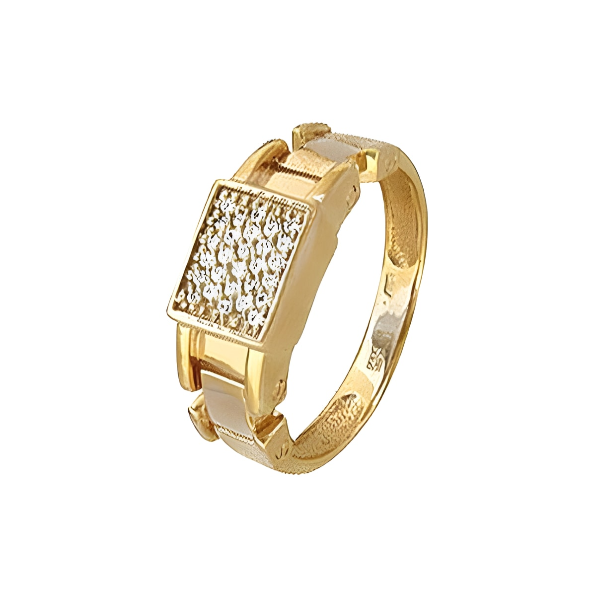
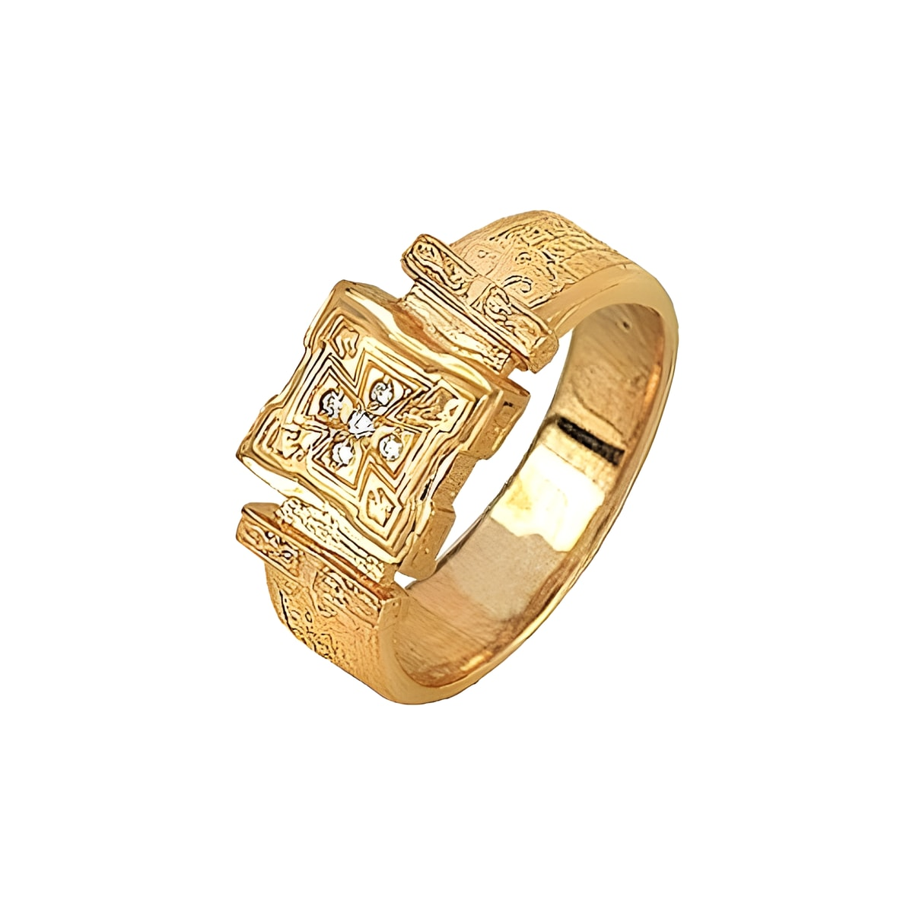

Загрузка каталога изделий...
Кольца, серьги, гарнитуры и цепи из золота и серебра — актуальный каталог мастерской.

Загрузка каталога изделий...

Мы не перекупаем готовое — каждое изделие делается у нас: от идеи и веса до готовой передачи клиенту или магазину.
Кольца, серьги, гарнитуры и цепи изготавливаются в мастерской на ул. Коммунаров, 40.
Частные заказы по эскизу и постоянное сотрудничество с магазинами.
Отправляем готовые изделия в любой регион страны.
От идеи до готового изделия — путь, который проходит каждый индивидуальный заказ.
Узнаём, что вы хотите получить: тип изделия, металл, бюджет и сроки.
Уточняем детали изделия и ориентировочный вес металла до начала работы.
Производство — в Костроме, силами собственной мастерской.
Забираете лично или получаете доставкой в любой регион России.
Изготовим по индивидуальному эскизу — под ваш металл, вес и дизайн.